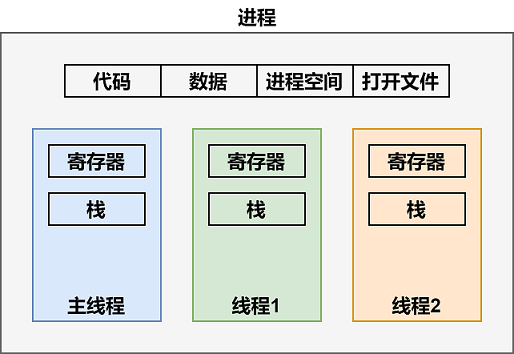
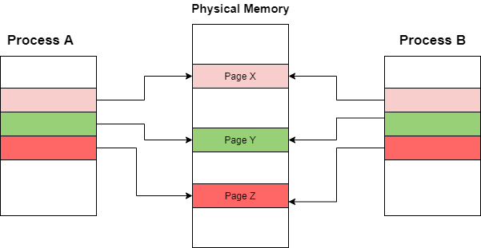

并发¶
《程序员的自我修养--链接、装载与库》 - 俞甲子，石凡，潘爱民，第一章的读书笔记，本文中的所有代码可在GitHub仓库中找到
进程与线程¶
线程，又称为轻量级进程(Lightweight Process, LWP)，是程序执行流的最小单元。如下图所示，一个线程有以下几个部分组成：
- 线程ID
- 当前指令指针PC
- 寄存器集合
- 栈
一个进程由一个到多个线程组成，各线程之间共享一些资源，包括：
- 程序的内存空间，如代码段、数据段、堆等
- 进程级的资源，如打开的文件描述符，信号等

线程的访问非常自由，它可以访问内存里的所有数据，除了少数私有的变量，如下表所示：
| 线程私有 | 线程之间共享(进程所有) |
|---|---|
| 1.局部变量 2.函数的参数 3.TLS数据 |
1.全局变量 2.堆上的数据 3.函数里的静态变量 4.程序代码，任何线程都有权力读取并执行任何代码 5.打开的文件，A线程打开的文件可以由B线程读写 |
从Linux内核角度，进程和线程的区别仅仅是可访问的资源不同，其自身的结构是类似的，都是一个任务，详情可参考文档。在Linux下，以下方法可以创建一个新的任务：
| 系统调用 | 作用 |
|---|---|
| fork | 复制当前进程，文件锁和挂起的信号不会被复制 |
| exec | 使用新的可执行映像覆盖当前可执行映像 |
| clone | 创建新任务并从指定位置开始执行，根据参数选项的不同，既可用于创建进程，也可用于创建线程 |
写时复制¶
Linux产生一个新任务的速度是非常快的，因为新任务不是复制原任务的内存空间，而是和原任务一起共享一个写时复制(Copy on Write, COW)的内存空间。所谓写时复制，指的是两个任务可以同时自由地读取内存，但任意一个任务试图对内存进行修改时，内存就会复制一份提供给修改方单独使用，以免影响到其他的任务使用。
例如，进程A创建了进程B，最初它们共享相同的内存页。由于创建前后内存并没有变化，所以进程B的创建非常迅速。

此时，进程A需要修改页面Z中的内容，一个新的页面Z的拷贝会被创建，进程A就单独拥有此页面。从而，进程A对页面Z的任何修改都不会影响进程B。详情可参考文档。

fork进程¶
例子"fork"利用系统调用fork创建了一个新进程：
pid_t pid = fork();
fork出的子进程和父进程各自拥有不同的PID，并且不共享变量，因此子进程对buf的修改不会影响父进程的内容：
> ./main
[PID 57469, TID 57469] Child sees buf = "hello from parent"
[PID 57468, TID 57468] Child exited with status 0, buf = "hello from parent"
clone进程¶
例子"clone"利用系统调用clone创建了一个新进程：
unsigned long flags = 0;
if (argc > 1 && !strcmp(argv[1], "vm"))
{
flags |= CLONE_VM;
}
clone(child_func, stack + STACK_SIZE, flags | SIGCHLD, buf)
程序默认设置了SIGCHLD选项，因此父进程可以收到子进程结束的信息，从而等到子进程结束再退出。程序可以选择是否设置CLONE_VM选项。如果设置了CLONE_VM，则两个进程共享内存空间。因此，子进程对buf的修改，在父进程中可见，打印结果如下：
> ./main
[PID 55486, TID 55486] Child sees buf = "hello from parent"
[PID 55485, TID 55485] Child exited with status 0, buf = "hello from parent"
> ./main vm
[PID 55517, TID 55517] Child sees buf = "hello from parent"
[PID 55516, TID 55516] Child exited with status 0, buf = "hello from child"
clone线程¶
例子"clone_thread"创建了一个新线程：
clone(&func, (char *)child_stack + STACK_SIZE, CLONE_THREAD | CLONE_SIGHAND | CLONE_FS | CLONE_VM | CLONE_FILES, NULL);
CLONE_THREAD选项创建的新任务和调用进程拥有相同的PID，因此它更像一个线程，可以直接在新任务上打GDB的断点(无须set follow-fork-mode child)。无论是查看/proc/self/status信息，还是打印PID和TID，都显示新建的任务更接近一个线程，而不是进程：
> ./main
This process pid: 56244, tid: 56244
Creating new thread...
Done! Thread pid: 56245
Looking into /proc/self/status...
...
Tgid: 56244
Ngid: 0
Pid: 56244
PPid: 47895
...
[PID 56244, TID 56245] Terminating func...
[PID 56244, TID 56244] Parent process end
线程库NPTL¶
NPTL(Native POSIX Threads Library)线程库提供了线程相关的各种API，方便用户进行线程的创建、同步、销毁等。
#include <pthread.h>
// 创建线程
// thread - 线程标识，用于后续对线程的操作
// attr - 线程属性，NULL表示默认属性，可结合pthread_attr_init()等属性函数配置自定义属性值
int pthread_create(pthread_t* thread, const pthread_attr_t* attr, void*(*stat_routine)(void*), void* arg);
// 同步线程
// retval - 目标线程返回的退出信息
int pthread_join(pthread_t thread, void** retval);
// 结束线程
// retval - 向线程调用者传递的退出信息指针
void pthread_exit(void* retval);
例子"nptl_thread"展示了如何通过NPTL线程库创建线程，向线程传递参数，并接收线程返回的结果：
struct thread_info
{ /* Used as argument to thread_start() */
pthread_t thread_id; /* ID returned by pthread_create() */
int thread_num; /* Application-defined thread # */
int ret; /* Return value */
};
void *thread_start(void *arg)
{
struct thread_info *tinfo = arg;
printf("[Thread_%d, num_%ld] Thread processing done\n", tinfo->thread_num, tinfo->thread_id);
tinfo->ret = tinfo->thread_num;
pthread_exit(&tinfo->ret);
}
int main(void)
{
...
for (int tnum = 0; tnum < NUM_THREADS; tnum++)
{
tinfo[tnum].thread_num = tnum + 1;
pthread_create(&tinfo[tnum].thread_id, NULL, &thread_start, &tinfo[tnum]);
}
void *res;
for (int tnum = 0; tnum < NUM_THREADS; tnum++)
{
pthread_join(tinfo[tnum].thread_id, &res);
printf("Joined with thread %d; Return value from thread is [%d]\n",
tinfo[tnum].thread_num, *(int *)res);
// free res if the res is allocated by the thread
}
...
}
> ./main
[Thread_2, num_140071691572992] Thread processing done
[Thread_1, num_140071699965696] Thread processing done
Joined with thread 1; Return value from thread is [1]
Joined with thread 2; Return value from thread is [2]
线程间同步¶
互斥量(Mutex)¶
互斥量是最常见的线程同步机制，资源仅同时允许一个线程访问，并且获取和释放互斥量的线程必须是同一个线程。NPTL线程库提供了如下对互斥量操作的API：
// 初始化互斥量
// mutex - 一个可全局访问的`pthread_mutex_t`互斥量
// mutexattr - 互斥量属性，NULL表示默认属性，可结合pthread_mutexattr_init()等属性函数配置自定义属性
// 例如，默认情况下，互斥量是不能跨进程共享的，通过pthread_mutexattr_setpshared()可设置跨进程共享互斥量
int pthread_mutex_init(pthread_mutex_t* mutex, const pthread_mutexattr_t* mutexattr);
// 销毁互斥量
int pthread_mutex_destroy(pthread_mutex_t* mutex);
// 获取/释放互斥量
int pthread_mutex_lock(pthread_mutex_t* mutex);
int pthread_mutex_trylock(pthread_mutex_t* mutex);
int pthread_mutex_unlock(pthread_mutex_t* mutex);
例子"con_th/mutex"利用互斥量，同步了两个线程的执行顺序：
pthread_mutex_t lock;
void *thread_start(void *arg)
{
pthread_mutex_lock(&lock);
pthread_t id = pthread_self();
printf("[Thread %ld] Critical section start...\n", id);
sleep(1);
printf("[Thread %ld] Critical section end...\n", id);
pthread_mutex_unlock(&lock);
return NULL;
}
int main(void)
{
pthread_mutex_init(&lock, NULL);
pthread_t t1, t2;
pthread_create(&t1, NULL, thread_start, NULL);
pthread_create(&t2, NULL, thread_start, NULL);
pthread_join(t1, NULL);
pthread_join(t2, NULL);
pthread_mutex_destroy(&lock);
return 0;
}
> ./main
[Thread 139968003606272] Critical section start...
[Thread 139968003606272] Critical section end...
[Thread 139968011998976] Critical section start...
[Thread 139968011998976] Critical section end...
信号量(Semaphore)¶
相较于互斥量，信号量更加灵活。信号量分为：
- 二元信号量 (Binary Semaphore)
- 初始值为1的信号量，只有占用/非占用两种状态，不同于互斥量的地方是：信号量的获取和释放不要求是同一个线程
- 多源信号量 (Counting Semaphore)
- 一个初始值为N的信号量，允许N个线程并发访问
POSIX标准规定了操作信号量的一组接口，如下：
#include <semaphore.h>
// 初始化一个未命名的信号量
// sem - 一个可以全局访问的信号量
// pshared - 0表示个信号量是当前进程的局部信号量，否则该信号量就可以在多个进程之间共享
// 和互斥量一样，信号量也可以配置为进程间共享，同时要求信号量要位于共享内存中
// value - 信号量的初始值，1表示二元信号量
int sem_init(sem_t* sem, int pshared, unsigned int value);
// 销毁信号量
int sem_destroy(sem_t* sem);
// 以原子操作的方式将信号量的值减1，如果信号量的值为0，则阻塞
int sem_wait(sem_t* sem);
// 不阻塞，如果信号量为0，返回-1，并设置errno为EAGAIN
int sem_trywait(sem_t* sem);
// 以原子操作的方式将信号量的值加1
int sem_post(sem_t* sem);
例子"con_th/binary_sem"利用二元信号量，同步了两个线程的执行顺序，效果和“互斥量”的例子相同：
sem_t sem;
void *thread_start(void *arg)
{
sem_wait(&sem);
pthread_t id = pthread_self();
printf("[Thread %ld] Critical section start...\n", id);
sleep(1);
printf("[Thread %ld] Critical section end...\n", id);
sem_post(&sem);
return NULL;
}
int main(void)
{
sem_init(&sem, 0, 1);
pthread_t t1, t2;
pthread_create(&t1, NULL, thread_start, NULL);
pthread_create(&t2, NULL, thread_start, NULL);
pthread_join(t1, NULL);
pthread_join(t2, NULL);
sem_destroy(&sem);
return 0;
}
> ./main
[Thread 140373155976960] Critical section start...
[Thread 140373155976960] Critical section end...
[Thread 140373164369664] Critical section start...
[Thread 140373164369664] Critical section end...
例子"con_th/counting_sem"利用多元信号量，实现了“生产者/消费者”模型，详情可参考代码，这里不做细述。
条件变量(Condition Variable)¶
条件变量类似于一个栅栏。对于条件变量，线程可以有两种操作：
- 等待条件变量
- 一个条件变量可以被多个线程等待
- 唤醒条件变量
- 某个或所有等待此条件变量的线程都会被唤醒并继续运行
条件变量需要互斥量的配合使用，保证等待/唤醒条件变量的动作是互斥的。因此，条件变量可以让许多线程一起等待某个事件的发生，当事件发生时，所有的线程可以一起恢复执行。
#include <pthread.h>
// 初始条件变量
// cond - 一个可以全局访问的`pthread_cond_t`条件变量
// cond_attr - 条件变量属性，NULL表示默认属性，和互斥量类似，也有相关函数配置属性
int pthread_cond_init(pthread_cond_t* cond, const pthread_condattr_t* cond_attr);
// 销毁条件变量
int pthread_cond_destroy(pthread_cond_t* cond);
// 以广播的方式唤醒所有的等待目标条件变量的线程
int pthread_cond_broadcast(pthread_cond_t* cond);
// 用于唤醒一个等待目标条件变量的线程，至于哪个线程被唤醒，取决于线程的优先级和调度策略
int pthread_cond_signal(pthread_cond_t* cond);
// 用于等待目标条件变量，mutex用于保护条件变量的互斥量
// 在调用前，必须确保互斥量mutex已经加锁。在函数执行时，限把调用线程翻入条件变量的等待队列中，然后将互斥量解锁
// 当函数成功返回时，互斥量将再次被上锁
int pthread_cond_wait(pthread_cond_t* cond, pthread_mutex_t* mutex);
例子"con_th/cond"利用条件变量，用一个线程触发另外两个线程开始运行：
pthread_mutex_t lock;
pthread_cond_t cond;
int started = 0;
void *thread_run(void *arg)
{
pthread_mutex_lock(&lock);
pthread_t id = pthread_self();
printf("[Thread %ld] Entered..\n", id);
if (!started)
pthread_cond_wait(&cond, &lock);
printf("[Thread %ld] Just Exiting...\n", id);
pthread_mutex_unlock(&lock);
return NULL;
}
void *thread_trigger(void *arg)
{
pthread_mutex_lock(&lock);
pthread_t id = pthread_self();
printf("[Thread %ld] Start Trigger...\n", id);
started = 1;
pthread_cond_broadcast(&cond);
printf("[Thread %ld] End Trigger...\n", id);
pthread_mutex_unlock(&lock);
return NULL;
}
int main(void)
{
pthread_mutex_init(&lock, NULL);
pthread_cond_init(&cond, NULL);
pthread_t run_t0, run_t1;
pthread_t trigger_t;
pthread_create(&run_t0, NULL, thread_run, NULL);
pthread_create(&run_t1, NULL, thread_run, NULL);
sleep(1);
pthread_create(&trigger_t, NULL, thread_trigger, NULL);
pthread_join(trigger_t, NULL);
pthread_join(run_t0, NULL);
pthread_join(run_t1, NULL);
pthread_cond_destroy(&cond);
pthread_mutex_destroy(&lock);
return 0;
}
> ./main
[Thread 139980016891648] Entered..
[Thread 139980025284352] Entered..
[Thread 139980008498944] Start Trigger...
[Thread 139980008498944] End Trigger...
[Thread 139980016891648] Just Exiting...
[Thread 139980025284352] Just Exiting...
进程间同步¶
前面线程同步的方法(互斥量，信号量，条件变量)，都是POSIX标准提供的API。它们不仅可以作用于线程，也可以应用于进程，可参考下面的例子：
- 互斥量"mutex_posix"
- 信号量"sem_posix"
- 条件变量"cond_posix"
互斥量(Mutex)¶
POSIX提供了对进程互斥量的操作，要使互斥量在进程中生效，需要满足两点：
- 互斥量需要定义在进程间能共享的位置，如共享内存中
- 互斥量属性需要配置为
PTHREAD_PROCESS_SHARED(1)，默认是PTHREAD_PROCESS_PRIVATE(0)
例子"con_proc/mutex_posix"利用互斥量，同步了两个进程的执行顺序：
// 1.在匿名共享内存上创建互斥量
shm_lock = (pthread_mutex_t*) mmap(NULL, sizeof(pthread_mutex_t), PROT_READ | PROT_WRITE, MAP_SHARED | MAP_ANON, -1, 0);
// 2.配置互斥量的属性为PTHREAD_PROCESS_SHARED
pthread_mutexattr_t attr;
pthread_mutexattr_init(&attr);
pthread_mutexattr_setpshared(&attr, PTHREAD_PROCESS_SHARED);
pthread_mutex_init(shm_lock, &attr);
pthread_mutexattr_destroy(&attr);
信号量(Semaphore)¶
POSIX提供了对进程信号量的操作，要使信号量在进程中生效，和互斥量一样，也需要满足两点：
- 信号量需要定义在进程间能共享的位置，如共享内存中
- 初始化信号量时，
pshared选项设置为1
例子"con_proc/sem_posix"利用二元信号量，同步了两个进程的执行顺序，效果和“互斥量”的例子相同：
// 1.在匿名共享内存上创建信号量
sem = (sem_t *)mmap(NULL, sizeof(sem_t), PROT_READ | PROT_WRITE, MAP_ANONYMOUS | MAP_SHARED, -1, 0);
// 2.初始化信号量，第二个参数是`pshared`，将其设置为1就可在进程间共享信号量
sem_init(sem, 1, 1);
条件变量(Condition Variable)¶
POSIX提供了对进程条件变量的操作，要使条件变量在进程中生效，和互斥量一样，也需要满足两点：
- 条件变量需要定义在进程间能共享的位置，如共享内存中
- 条件变量属性需要配置为
PTHREAD_PROCESS_SHARED(1)，默认是PTHREAD_PROCESS_PRIVATE(0)
例子"con_proc/cond_posix"利用了条件变量，用主进程触发另外两个子进程开始运行：
// 1.在匿名共享内存上创建条件变量
shm_cond = (pthread_cond_t*) mmap(NULL, sizeof(pthread_cond_t), PROT_READ | PROT_WRITE, MAP_SHARED | MAP_ANON, -1, 0);
// 2.配置条件变量的属性为PTHREAD_PROCESS_SHARED
pthread_condattr_t cond_attr;
pthread_condattr_init(&cond_attr);
pthread_condattr_setpshared(&cond_attr, PTHREAD_PROCESS_SHARED);
pthread_cond_init(shm_cond, &cond_attr);
pthread_condattr_destroy(&cond_attr);
三种进程间通信方法¶
Linux系统的进程间通信有两种类型，分别是"POSIX"和"System V"，且提供了三种常见的进程通信的方法：
- 信号量
- 共享内存
- 消息队列
下表展示了"POSIX"和"System V"的区别，详情参考文档：
| IPC | System V | POSIX |
|---|---|---|
| 描述 | 1983年由AT&T创建，包括三种IPC机制：共享内存，消息队列和信号量 | 由IEEE制定，也包括了这三种IPC机制 |
| 信号量 | semget(), semop(), semctl() |
具名: sem_open(), sem_close(), sem_post(), sem_wait()匿名: sem_init(), sem_destroy(), sem_post(), sem_wait() |
| 共享内存 | shmget(), shmat(), shmdt(), shmctl() |
shm_open(), mmap(), shm_unlink() |
| 消息队列 | msgget(), msgsnd(), msgrcv(), msgctl() |
mq_open(), mq_send(), mq_receive(), mq_unlink() |
| 互斥量 | 无 | pthread_mutex_lock(), pthread_mutex_unlock() |
| 条件变量 | 无 | pthread_cond_wait(), pthread_cond_broadcast()， pthread_cond_signal() |
信号量(Semaphore)¶
POSIX¶
"POSIX"提供了两组API操作信号量：
- 匿名信号量，参考前面的例子"con_proc/sem_posix"
- 具名信号量，API如下：
#include <semaphore.h>
// 创建/打开信号量"name"
// name - 信号量名称，信号量会创建为：/dev/shm/sem.<name>
// oflag, mode - 和创建文件时的选项相同
// value - 信号量的初始值
sem_t *sem_open(const char *name, int oflag, mode_t mode, unsigned int value);
// 关闭信号量，进程将释放信号量
int sem_close(sem_t *sem);
// 释放信号量
int sem_post(sem_t *sem);
// 获取信号量
int sem_wait(sem_t *sem);
// 获取信号量的值
int sem_getvalue(sem_t *restrict sem, int *restrict sval);
// 删除信号量
// name - 信号量名称，/dev/shm文件夹中对应的文件被删除
int sem_unlink(const char *name);
例子"con_proc/sem_named_posix"利用具名信号量，同步了两个进程的执行顺序，效果和前面的例子相同。如果没有调用sem_unlink()删除共享的具名信号量，在/dev/shm目录下，会留存一个sem.开头的文件：
#define FILE_PATH "/sem_test"
void child_process()
{
sem_t *sem = sem_open(FILE_PATH, O_RDWR);
sem_wait(sem);
printf("[Child PID %d] Critical section start...\n", getpid());
sleep(1);
printf("[Child PID %d] Critical section end...\n", getpid());
sem_post(sem);
sem_close(sem);
}
void parent_process()
{
sem_t *sem = sem_open(FILE_PATH, O_RDWR);
sem_wait(sem);
printf("[Parent PID %d] Critical section start...\n", getpid());
sleep(1);
printf("[Parent PID %d] Critical section end...\n", getpid());
sem_post(sem);
sem_close(sem);
}
int main()
{
// create /dev/shm/sem.sem_test
sem_t *sem = sem_open(FILE_PATH, O_RDWR | O_CREAT, 0644, 1);
assert(sem != SEM_FAILED);
int val = 0;
sem_getvalue(sem, &val);
printf("sem value = %d\n", val);
sem_close(sem);
pid_t pid = fork();
if (pid == 0)
{
child_process();
return 0;
}
assert(pid > 0);
parent_process();
wait(NULL);
// remove /dev/shm/sem.sem_test
// sem_unlink(FILE_PATH);
return 0;
}
> ./main
sem value = 1
[Parent PID 131519] Critical section start...
[Parent PID 131519] Critical section end...
[Child PID 131520] Critical section start...
[Child PID 131520] Critical section end...
> ls -l /dev/shm
-rw-r--r-- 1 yuxiangw yuxiangw 32 5月 10 17:20 sem.sem_test
System V¶
"System V"提供了一组API，用于操作多个信号量(信号量集)：
#include <sys/sem.h>
// 创建/获取一个信号量集
// key - 全局唯一的标识，可通过`ftok()`系统调用生成
// num_sems - 指定信号量集中，信号的数目
// sem_flags - 除了常规的权限设置外，还可以设置IPC_CREAT，表示创建新的信号集
// 返回信号量集的标识符
int semget(key_t key, int num_sems, int sem_flags);
// 获取/释放信号量
// sem_id - semget()返回的标识
// sem_ops - 对信号集的操作
// num_sem_ops - sem_ops中元素的个数
int semop(int sem_id, struct sembuf* sem_ops, size_t num_sem_ops);
struct sembuf
{
unsigned short int sem_num; // 信号量集中的信号量的编号，0表示信号量集中的第一个信号量
short int sem_op; // 改变信号量的值，大于零表示释放sem_op个信号量，反之要获取信号量
short int sem_flg; // IPC_NOWAIT - 无论操作是否成功，立即返回
// SEM_UNDO - 当进程退出时取消正在进程的semop操作
};
// 用命令控制信号量集
// IPC_RMID命令 - 移除信号量集
int semctl(int sem_id, int sem_num, int command, ...);
// 命令参数
union semun
{
int val; // 用于SETVAL命令
struct semid_ds* buf; // 用于IPC_STAT和IPC_SET命令
unsigned short* array; // 用于GETALL和SETALL命令
struct seminfo* __buf; // 用于IPC_INFO命令
};
// 信号量创建的内核结构
struct semid_ds
{
struct ipc_perm sem_perm; // 信号量的操作权限
unsigned long int sem_nsems; // 该信号量集中的信号量数目
time_t sem_otime; // 最后一次调用semop的时间
time_t sem_ctime; // 最后一次调用semctl的时间
};
例子"con_proc/sem_systemv"利用"System V"的信号量集操作，同步了两个进程的执行顺序，效果和上面POSIX的例子相同。可通过ipcs -s查看系统由"System V"创建的信号量集，也可以通过打印/proc/sysvipc/sem查看信号量集：
#define PATHNAME "." // the file must refer to an existing, accessible file
#define PROJ_ID 'a'
// semun is not defined in "sys/sem.h"
union semun
{
int val; /* used for SETVAL only */
struct semid_ds *buf; /* used for IPC_STAT and IPC_SET */
ushort *array; /* used for GETALL and SETALL */
struct seminfo* __buf;
};
// op为-1时执行P操作，op为1时执行V操作
void pv(int sem_id, int op)
{
struct sembuf sem_b;
sem_b.sem_num = 0;
sem_b.sem_op = op;
sem_b.sem_flg = SEM_UNDO;
semop(sem_id, &sem_b, 1);
}
void child_process()
{
key_t key = ftok(PATHNAME, PROJ_ID);
int semid = semget(key, 1, 0666);
assert(semid != -1);
pv(semid, -1);
printf("[Child PID %d] Critical section start...\n", getpid());
sleep(1);
printf("[Child PID %d] Critical section end...\n", getpid());
pv(semid, 1);
}
void parent_process()
{
key_t key = ftok(PATHNAME, PROJ_ID);
int semid = semget(key, 1, 0666);
assert(semid != -1);
pv(semid, -1);
printf("[Parent PID %d] Critical section start...\n", getpid());
sleep(1);
printf("[Parent PID %d] Critical section end...\n", getpid());
pv(semid, 1);
}
int main()
{
// 创建/打开信号量集(PATHNAME, PROJ_ID)
key_t key = ftok(PATHNAME, PROJ_ID);
assert(key != -1);
int semid = semget(key, 1, 0666 | IPC_CREAT);
assert(semid != -1);
printf("sem key (0x%x), sem id (%d) is created\n", key, semid);
// 设置信号量的值为1
union semun arg;
arg.val = 1;
semctl(semid, 0, SETVAL, arg);
pid_t pid = fork();
if (pid == 0)
{
child_process();
return 0;
}
parent_process();
wait(NULL);
// 删除信号量集
// semctl(semid, 0, IPC_RMID, arg);
return 0;
}
> ./main
sem key (0x61050964), sem id (6) is created
[Parent PID 137766] Critical section start...
[Parent PID 137766] Critical section end...
[Child PID 137767] Critical section start...
[Child PID 137767] Critical section end...
> ipcs -s
------ Semaphore Arrays --------
key semid owner perms nsems
0x61050964 6 yuxiangw 666 1
> ipcs -s -i 6
Semaphore Array semid=6
uid=1000 gid=1000 cuid=1000 cgid=1000
mode=0666, access_perms=0666
nsems = 1
otime = Tue May 10 12:16:39 2022
ctime = Tue May 10 12:16:37 2022
semnum value ncount zcount pid
0 1 0 0 138697
> cat /proc/sysvipc/sem
key semid perms nsems uid gid cuid cgid otime ctime
1627720036 6 666 1 1000 1000 1000 1000 1652156199 1652156197
共享内存(Shared memory)¶
POSIX¶
"POSIX"提供了shm_open()和shm_unlink()，用于创建/删除共享内存。再结合mmap()，将共享内存映射到用户空间，就可以实现在不同进程间共享内存了。
#include <sys/mman.h>
// 创建/打开共享内存"name"
// name - 共享内存名称，会创建：/dev/shm/<name>
// oflag, mode - 和创建文件时的选项相同
// 返回文件描述符
int shm_open(const char *name, int oflag, mode_t mode);
// 删除共享内存
int shm_unlink(const char *name);
// 利用ftruncate修改共享内存的大小
int ftruncate(int fd, off_t length);
// 利用mmap访问共享内存
void *mmap(void *addr, size_t length, int prot, int flags, int fd, off_t offset);
int munmap(void *addr, size_t length);
例子"con_proc/shm_posix"利用"POSIX"的共享内存操作，在子进程中成功读取了父进程向共享内存中写入的"Hello World"：
#define FILE_PATH "/my_shm_test"
#define FILE_SIZE 512
const char buf[] = "Hello World";
void read_data()
{
int fd = shm_open(FILE_PATH, O_RDONLY, S_IRUSR | S_IWUSR);
struct stat st;
fstat(fd, &st);
const size_t shm_size = st.st_size;
printf("The size of shard memory is %zu bytes\n", shm_size);
void *addr = mmap(NULL, shm_size, PROT_READ, MAP_SHARED, fd, 0);
char data[shm_size];
memcpy(data, addr, shm_size);
printf("Read from shared memory: \"%s\"\n", data);
munmap(addr, FILE_SIZE);
// shm_unlink(FILE_PATH);
}
int main(int argc, char *argv[])
{
int fd = shm_open(FILE_PATH, O_RDWR | O_CREAT, S_IRUSR | S_IWUSR);
ftruncate(fd, FILE_SIZE);
void *addr = mmap(NULL, FILE_SIZE, PROT_WRITE, MAP_SHARED, fd, 0);
memcpy(addr, buf, sizeof(buf));
munmap(addr, FILE_SIZE);
pid_t pid = fork();
if (pid == 0)
{
read_data();
return 0;
}
wait(NULL);
// shm_unlink(FILE_PATH);
return 0;
}
> ./main
The size of shard memory is 512 bytes
Read from shared memory: "Hello World"
# 共享内存的大小为512字节
> ll /dev/shm/my_shm_test
-rw------- 1 yuxiangw yuxiangw 512 5月 10 12:51 /dev/shm/my_shm_test
# 共享内存的内容为"Hello World"
> cat /dev/shm/my_shm_test
Hello World
System V¶
"System V"也提供了一组API，用于操作共享内存：
#include <sys/shm.h>
// 创建/获取一个共享内存
// key - 全局唯一的标识，可通过`ftok()`系统调用生成
// size - 共享内存大小，如果共享内存已经存在，这个参数无效
// shmflg - 除了常规的权限设置外，还可以设置IPC_CREAT，表示创建新的共享内存
// 返回共享内存的标识符
int shmget(key_t key, size_t size, int shmflg);
// 映射共享内存到用户空间
// shmid - shmget()返回的标识
// shmaddr - 如果为NULL，由操作系统选择被关联的地址
// shmflg - 可配置是否只读等
// 返回被关联到的地址
void *shmat(int shmid, const void *shmaddr, int shmflg);
// 将共享内存从进程地址空间分离
int shmdt(const void* shm_addr);
// 用命令控制信号量集
// IPC_RMID命令 - 移除共享内存
// IPC_STAT命令 - 获取共享内存信息`shmid_ds`，如内存大小
int shmctl(int shm_id, int command, struct shmid_ds* buf);
// 共享内存创建的内核数据结构
struct shmid_ds
{
struct ipc_perm shm_perm; // 操作权限
size_t shm_segsz; // 共享内存大小
__time_t shm_atime; // 最后一次调用shmat的时间
__time_t shm_dtime; // 最后一次调用shmdt的时间
__time_t shm_ctime; // 最后一次调用shmctl的时间
__pid_t shm_cpid; // 创建者PID
__pid_t shm_lpid; // 最后一次执行shmat或shmdt操作的进程的PID
shmatt_t shm_nattach; // 目前关联到此共享内存的进程数量
};
例子"con_proc/shm_systemv"利用"System V"的共享内存操作，在子进程中成功读取了父进程向共享内存中写入的"Hello World"，同样也可以用用ipcs -m命令查看系统由"System V"创建的共享内存，也可以通过打印/proc/sysvipc/shm查共享内存：
#define PATHNAME "."
#define PROJ_ID 'a'
#define SHMSZ 27
const char buf[] = "Hello World";
void read_data()
{
key_t key = ftok(PATHNAME, PROJ_ID);
int shmid = shmget(key, 0, 0444);
struct shmid_ds buf;
int res = shmctl(shmid, IPC_STAT, &buf);
const size_t shm_size = buf.shm_segsz;
printf("The size of shard memory is %zu bytes\n", shm_size);
void *addr = shmat(shmid, NULL, 0);
char data[shm_size];
memcpy(data, addr, shm_size);
printf("Read from shared memory: \"%s\"\n", data);
shmdt(addr);
}
int main(void)
{
key_t key = ftok(PATHNAME, PROJ_ID);
assert(key != -1);
int shmid = shmget(key, SHMSZ, 0666 | IPC_CREAT);
assert(shmid != -1);
printf("shm key (0x%x), shm id (%d) is created\n", key, shmid);
void *addr = shmat(shmid, NULL, 0);
memcpy(addr, buf, sizeof(buf));
pid_t pid = fork();
if (pid == 0)
{
read_data();
return 0;
}
assert(pid > 0);
wait(NULL);
int rc = shmdt(addr);
// shmctl(shmid, IPC_RMID, NULL);
return 0;
}
> ./main
shm key (0x61050984), shm id (18) is created
The size of shard memory is 27 bytes
Read from shared memory: "Hello World"
> ipcs -m -i 18
Shared memory Segment shmid=18
uid=1000 gid=1000 cuid=1000 cgid=1000
mode=0666 access_perms=0666
bytes=27 lpid=147243 cpid=144649 nattch=0
att_time=Tue May 10 13:40:48 2022
det_time=Tue May 10 13:40:48 2022
change_time=Tue May 10 13:17:19 2022
消息队列(Message Queues)¶
POSIX¶
"POSIX"提供了一组操作消息队列的API：
#include <mqueue.h>
// 创建/打开消息队列
// name - 消息队列名称，会在系统中创建：/dev/mqueue/<name>
// oflag, mode - 和创建文件时的选项相同
// attr - 消息队列属性，包括最大消息数，最大消息长度等。如果是NULL，使用默认属性
// 返回消息队列标识
mqd_t mq_open(const char *name, int oflag, mode_t mode, struct mq_attr *attr);
// 获取消息队列属性
int mq_getattr(mqd_t mqdes, struct mq_attr *attr);
// 消息队列属性内容
struct mq_attr {
long mq_flags; /* Flags: 0 or O_NONBLOCK */
long mq_maxmsg; /* Max. # of messages on queue */
long mq_msgsize; /* Max. message size (bytes) */
long mq_curmsgs; /* # of messages currently in queue */
};
// 发送消息至消息队列
// mqdes - mq_open()返回的标识
// msg_ptr, msg_len - 发送端缓存指针和大小，msg_len长度不能大于消息队列属性中的最大消息长度`mq_msgsize`
// msg_prio - 发送优先级
int mq_send(mqd_t mqdes, const char *msg_ptr, size_t msg_len, unsigned int msg_prio);
// 从消息队列接收消息
// mqdes - mq_open()返回的标识
// msg_ptr, msg_len - 接收端缓存指针和大小，msg_len长度不能小于消息队列属性中的最大消息长度`mq_msgsize`
// msg_prio - 接收优先级
ssize_t mq_receive(mqd_t mqdes, char *msg_ptr, size_t msg_len, unsigned int *msg_prio);
// 关闭消息队列
int mq_close(mqd_t mqdes);
// 删除消息队列
int mq_unlink(const char *name);
// 注册一次动作，在消息队列不为空时被触发，可参考例子：./code/con_proc/msg_posix/mq_notify.c
int mq_notify(mqd_t mqdes, const struct sigevent *sevp);
例子"con_proc/msg_posix"利用"POSIX"的消息队列操作，在子进程中成功读取了父进程向消息队列传入的"Hello World"，可通过cat /dev/mqueue/<name>查看消息队列的信息：
#define QUEUE_NAME "/my_msq_test"
#define MAX_SIZE 1024
const char buf[] = "Hello World";
void read_data()
{
mqd_t mq = mq_open(QUEUE_NAME, O_RDONLY);
struct mq_attr attr;
mq_getattr(mq, &attr);
char rcvbuf[attr.mq_msgsize];
int bytes = mq_receive(mq, rcvbuf, attr.mq_msgsize, NULL);
printf("Number of bytes of the messages in the queue is %d\n", bytes);
printf("Read from message queue: %s\n", rcvbuf);
mq_close(mq);
}
int main(int argc, char *argv[])
{
mqd_t mq = mq_open(QUEUE_NAME, O_CREAT | O_RDWR, 0644, NULL);
printf("msq(%d) /dev/mqueue%s is created\n", mq, QUEUE_NAME);
mq_send(mq, buf, sizeof(buf), 0);
mq_close(mq);
pid_t pid = fork();
if (pid == 0)
{
read_data();
return 0;
}
wait(NULL);
// mq_unlink(QUEUE_NAME);
return 0;
}
> ./main
msq(3) /dev/mqueue/my_msq_test is created
Number of bytes of the messages in the queue is 12
Read from message queue: Hello World
> cat /dev/mqueue/my_msq_test
QSIZE:0 NOTIFY:0 SIGNO:0 NOTIFY_PID:0
System V¶
"System V"也提供了一组API，用于操作消息队列：
#include <sys/msg.h>
// 创建/获取一个消息队列
// key - 全局唯一的标识，可通过`ftok()`系统调用生成
// msgflg - 除了常规的权限设置外，还可以设置IPC_CREAT，表示创建新的共消息队列
// 返回消息队列的标识符
int msgget(key_t key, int msgflg);
// 发送消息至消息队列
// msqid - msgget()返回的标识
// msg_ptr - 指向准备发送的消息，指针类型必须包含消息类型，如下：
// struct msgbuf
// {
// long mtype; // 消息类型，要求大于零，在接收的时候用到
// char mtext[MAXSIZE]; // 消息数据缓存
// };
// msg_sz - 消息数据部分(mtext)的长度
// msgflg - 控制发送行为，如果没有指定`IPC_NOWAIT`，队列满了，此函数阻塞
int msgsnd(int msqid, const void* msg_ptr, size_t msg_sz, int msgflg);
// 从消息队列接收消息
// msqid - msgget()返回的标识
// msg_ptr - 用于存储接收的消息
// msg_sz - 指的是消息数据部分的长度
// msgtype - 指定接收何种类型的消息，
// 等于0，读取消息队列中的第一个消息
// 大于0，读取消息队列中第一个类型为`msgtype`的消息
// 小于0，读取消息队列中第一个类型值比`msgtype`的绝对值小的消息
// msgflg - 控制函数行为
// IPC_NOWAIT：如果消息队列中没有消息，立即返回并设置errno为ENOMSG
// MSG_EXCEPT：如果msgtype大于0，则接收消息队列中第一个非msgtype类型的消息
// MSG_NOERROR：如果消息数据部分的长度超过了msg_sz，就将它截断
int msgrcv(int msqid, void* msg_ptr, size_t msg_sz, long int msgtype, int msgflg);
// 用命令控制消息队列
// IPC_RMID命令 - 移除消息队列
// IPC_STAT命令 - 获取消息队列信息`msqid_ds`，如消息队列中已有的字节数
int msgctl(int msqid, int command, struct msqid_ds* buf);
// 消息队列创建的内核数据结构
struct msqid_ds
{
struct ipc_perm msg_perm; // 操作权限
time_t msg_stime; // 最后一次调用msgsnd的时间
time_t msg_rtime; // 最后一次调用msgrcv的时间
time_t msg_ctime; // 最后一次被修改的时间
unsigned long __msg_cbytes; // 消息队列中已有的字节数
msgqnum_t msg_qnum; // 消息队列中已有的消息数
msglen_t msg_qbytes; // 消息队列允许的最大字节数
pid_t msg_lspid; // 最后执行msgsnd的进程的PID
pit_t msg_lrpid; // 最后执行msgrcv的进程的PID
};
ipcs -q查看系统由"System V"创建的消息队列，也可以通过打印/proc/sysvipc/msg查看消息队列：
#define PATHNAME "."
#define PROJ_ID 'a'
#define MAXSIZE 128
#define USER_MESSAGE_TYPE 1
typedef struct my_msgbuf
{
long mtype;
char mtext[MAXSIZE];
} my_msgbuf;
void read_msg()
{
key_t key = ftok(PATHNAME, PROJ_ID);
int msqid = msgget(key, 0444);
struct msqid_ds buf;
msgctl(msqid, IPC_STAT, &buf);
printf("Number of messages in the queue is %lu\n", buf.msg_qnum);
const size_t data_bytes = buf.__msg_cbytes;
printf("Number of bytes of the messages in the queue is %zu\n", data_bytes);
struct my_msgbuf rcvbuffer;
msgrcv(msqid, &rcvbuffer, data_bytes, USER_MESSAGE_TYPE, 0);
printf("Read from message queue (message type %ld): %s\n", rcvbuffer.mtype, rcvbuffer.mtext);
return;
}
int main()
{
key_t key = ftok(PATHNAME, PROJ_ID);
int msqid = msgget(key, IPC_CREAT | 0666);
printf("msq key(0x%x), msq id(%d) is created\n", key, msqid);
my_msgbuf sbuf;
sbuf.mtype = USER_MESSAGE_TYPE;
const char data[] = "Hello World";
memcpy(sbuf.mtext, data, sizeof(data));
msgsnd(msqid, &sbuf, sizeof(data), IPC_NOWAIT);
pid_t pid = fork();
if (pid == 0)
{
read_msg();
return 0;
}
wait(NULL);
// msgctl(msqid, IPC_RMID, NULL);
return 0;
}
> ./main
msq key(0x61050989), msq id(12) is created
Number of messages in the queue is 1
Number of bytes of the messages in the queue is 12
Read from message queue (message type 1): Hello World
> ipcs -q
------ Message Queues --------
key msqid owner perms used-bytes messages
0x61050989 12 yuxiangw 666 0 0
> ipcs -q -i 12
Message Queue msqid=12
uid=1000 gid=1000 cuid=1000 cgid=1000 mode=0666
cbytes=0 qbytes=16384 qnum=0 lspid=158821 lrpid=158822
send_time=Tue May 10 19:28:57 2022
rcv_time=Tue May 10 19:28:57 2022
change_time=Tue May 10 16:42:06 2022
> cat /proc/sysvipc/msg
key msqid perms cbytes qnum lspid lrpid uid gid cuid cgid stime rtime ctime
1627720073 12 666 0 0 158821 158822 1000 1000 1000 1000 1652182137 1652182137 1652172126
其他进程间通信方法¶
文件锁(File Lock)¶
文件锁提供了另一种进程间同步的方法：
// 获取/释放文件锁
// fd - 打开的文件描述符
// operation - 操作类型：
// LOCK_SH: 共享锁，多个进程可以使用同一把锁，常被用作读共享锁
// LOCK_EX: 排他锁，同时只允许一个进程使用，常被用作写锁
// LOCK_UN: 释放锁
int flock(int fd, int operation);
例子"flock"利用flock()同步了两个进程的执行顺序：
#define LOCK_FILE "lock_file.lock"
void child_start()
{
int fd = open(LOCK_FILE, O_RDONLY);
flock(fd, LOCK_EX);
printf("Child process has started\n");
sleep(1);
printf("Child process has finished\n");
flock(fd, LOCK_UN);
close(fd);
}
void parent_start()
{
int fd = open(LOCK_FILE, O_RDONLY);
flock(fd, LOCK_EX);
printf("Parent process has started\n");
sleep(1);
printf("Parent process has finished\n");
flock(fd, LOCK_UN);
close(fd);
}
int main(void)
{
// 创建一个普通文件
int fd = open(LOCK_FILE, O_RDONLY | O_CREAT, 0666);
close(fd);
pid_t pid = fork();
if (pid == 0)
{
child_start();
return 0;
}
parent_start();
wait(NULL);
return 0;
}
> ./main
Child process has started
Child process has finished
Parent process has started
Parent process has finished
管道(Pipe)¶
#include <unistd.h>
int pipe(int fd[2]);
pipe()函数可以创建一个管道，以实现进程间通信。一个管道包括两个文件描述符：
fd[0]读文件描述符- 如果所有进程的管道写文件描述符被关闭，
read读文件描述符返回零。否则默认情况下，如果管道为空会一直阻塞 fd[1]写文件描述符- 如果所有进程的管道读文件描述符被关闭，
write写文件描述符会触发SIGPIPE信号
例子"pipe"创建了一个管道，一个进程往管道中写入数据，另一个进程从管道中读出数据：
#define MSGSIZE 16
const char *msg1 = "hello, world #1";
const char *msg2 = "hello, world #2";
void write_data(int write_fd)
{
printf("Parent Task Starts\n");
// write will trigger SIGPIPE signal if all read fd is closed
int nbytes = write(write_fd, msg1, MSGSIZE);
printf("parent process wrote %d bytes to child process: %s\n", nbytes, msg1);
nbytes = write(write_fd, msg2, MSGSIZE);
printf("parent process wrote %d bytes to child process: %s\n", nbytes, msg2);
printf("Parent Task Ends\n");
}
void read_data(int read_fd)
{
printf("Child Task Starts\n");
char inbuf[MSGSIZE];
int nbytes = 0;
// read will return zero if all write fd is closed
while ((nbytes = read(read_fd, inbuf, MSGSIZE)) > 0)
printf("child process read %d bytes to from parent process: %s\n", nbytes, inbuf);
printf("Child Task Ends\n");
}
int main(int argc, char **argv)
{
int fd[2];
pipe(fd);
int read_fd = fd[0];
int write_fd = fd[1];
pid_t pid = fork();
if (pid == 0)
{
close(write_fd);
read_data(read_fd);
close(read_fd);
return 0;
}
close(read_fd);
sleep(1);
write_data(write_fd);
close(write_fd);
wait(NULL);
return 0;
}
> ./main
Child Task Starts
Parent Task Starts
parent process wrote 16 bytes to child process: hello, world #1
parent process wrote 16 bytes to child process: hello, world #2
Parent Task Ends
child process read 16 bytes to from parent process: hello, world #1
child process read 16 bytes to from parent process: hello, world #2
Child Task Ends